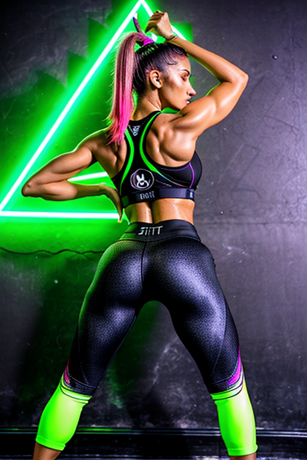
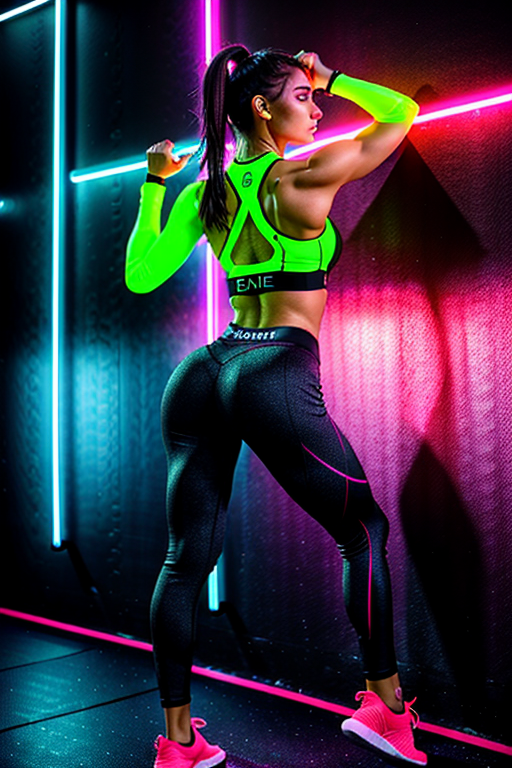
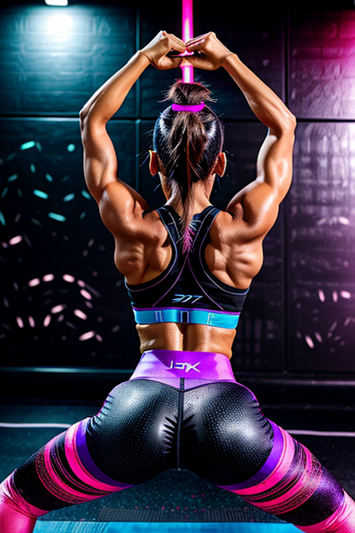
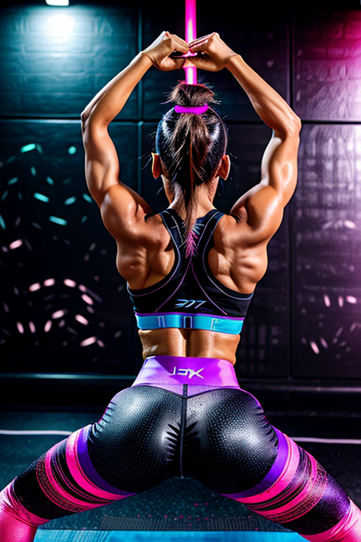
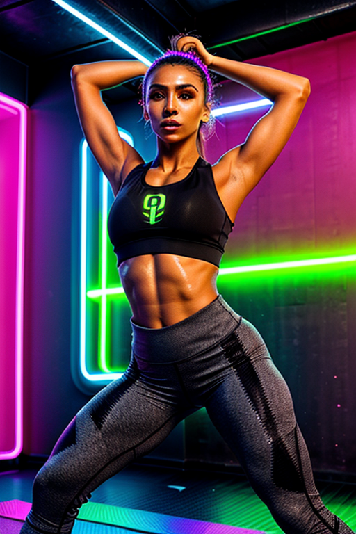
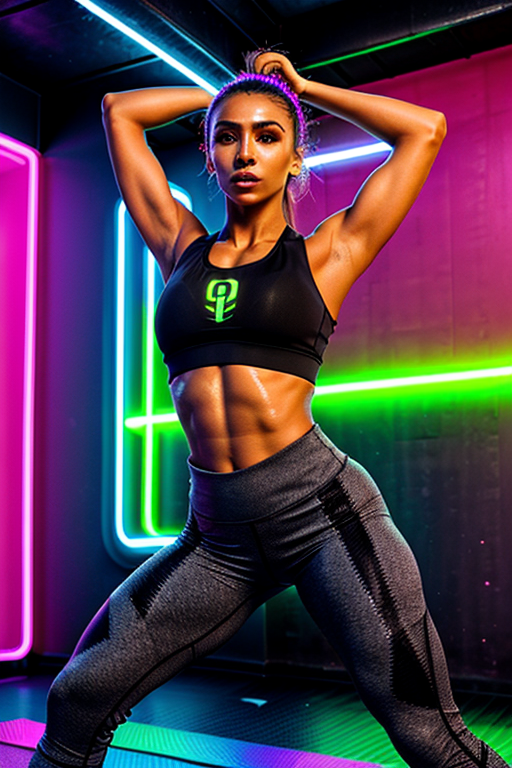
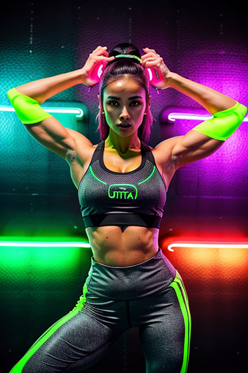
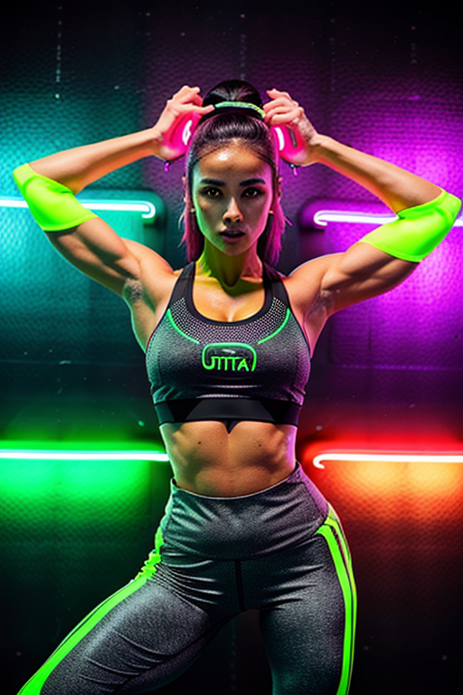
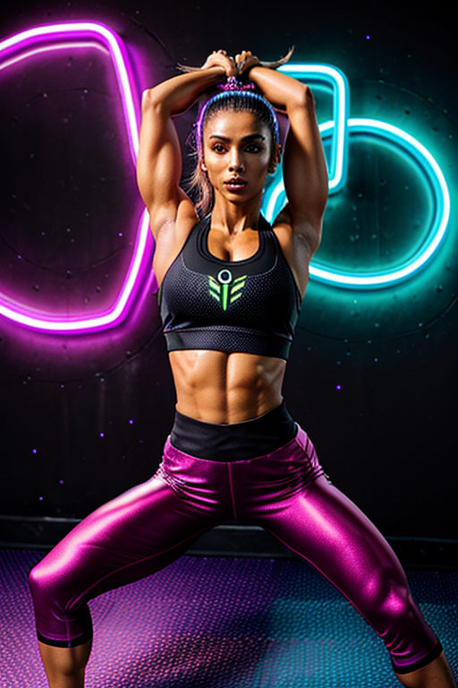
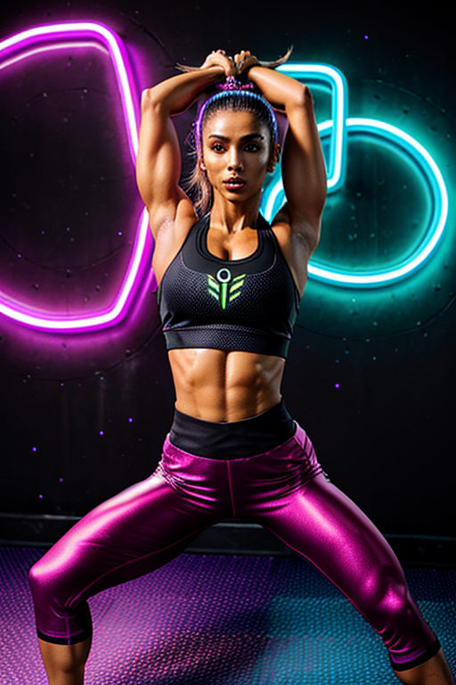

This set explores fitness girl toned arms through vintage aesthetics and warm tone under window light. Compositions use symmetry with bedroom scene, keeping focus clear and tidy. Details like evening dress styling and balanced colors make browsing easy.
Browse fitness images. Page 4 of curated fitness-style portrait collection.


 



 


 



 

This page explores page4 with a practical focus on visual detail and browsing experience. Alt text and headings are optimized to make the content accessible and to provide consistent cues across the site. Subtle differences in wording help avoid duplication across similar pages. Alt text and headings are optimized to make the content accessible and to provide consistent cues across the site. Subtle differences in wording help avoid duplication across similar pages. For more context, browse related entries linked nearby; each page offers a slightly different angle to limit overlap. The image aims to deliver a straightforward visual impression while keeping the file lightweight. A brief explanation clarifies the subject and lighting so visitors can quickly decide where to go next. For more context, browse related entries linked nearby; each page offers a slightly different angle to limit overlap.